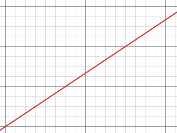
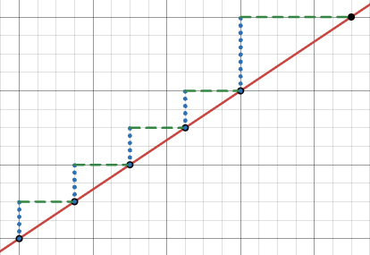
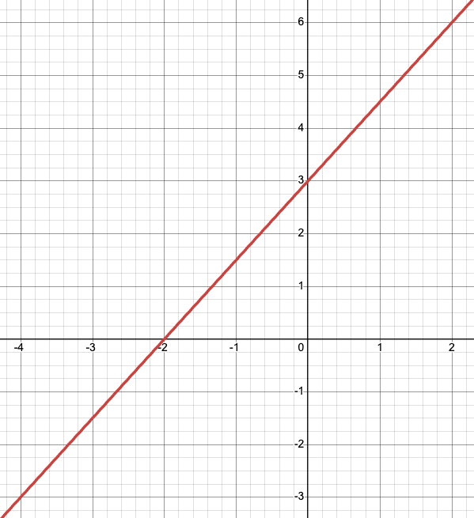
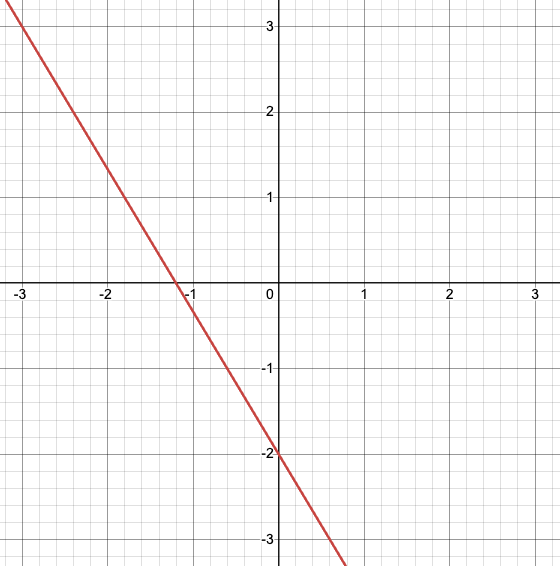

Section 2.5 Graphing and Solving Linear Equations
Linear equations are a topic usually covered for the first time in an Algebra 1 course. This section will provide a quick review of the basics. The information here will be mostly procedural and without a lot of context. We’ll dive in more deeply and look at some applications and more meaningful examples in the chapter on modeling. This might mean that this section is extra clear for you, or it might mean that is boring and harder to make sense of. Both outcomes and anything in between are fine, just be aware of how your brain is doing. If you need more context, move quickly here and come back as needed from
Chapter 4.
In the context of algebra, many folks are likely to give “\(y = mx + b\)” as the definition of a line. While this is not exactly the definition, it is a great place to center our thinking.
Definition 2.5.1. Slope-Intercept Form.
The slope-intercept form of a line is given by an equation in the form \(y = mx + b\text{.}\) The variables \(x\) and \(y\text{,}\) are the independent (horizontal) and dependent (vertical) variables. The symbols \(m\) and \(b\) are place holders for the quantities of slope and \(y\)-intercept.
If the idea of independent and dependent variables or horizontal and vertical directions is a little fuzzy, visit (or revisit)
Section 1.3.
A critical aspect of linear equations is slope, which tells us how much the dependent variable (vertical, \(y\)) changes with respect to the independent variable (horizontal, \(x\)). In a linear situation, the slope is a constant single value (that is defining feature of a line in algebra) so it makes sense to have a formula to compute it.
Definition 2.5.2. Slope Formula.
Given two ordered pairs \((x_1, y_1)\) and \((x_2, y_2)\text{,}\) the slope of the line connecting the points is given by
\begin{gather*}
m = \frac{\text{rise}}{\text{run}} = \frac{\text{change in output}}{\text{change in input}} = \frac{y_2 - y_1}{x_2 - x_1}
\end{gather*}
A positive slope, like \(m = \frac{1}{3}\) results in an increasing line, goes from the bottom left to the upper right. From a point on this line, we could move three steps to the right (the “run”) and one step up (the “rise”) and stay on the line. A negative slope, like \(m = -4\) results in a decreasing line; it moves downhill if we look at it from left to right. Since \(-4 = - \frac{4}{1} = \frac{-4}{1} = \frac{4}{-1}\) we can think about the same slope in a variety of ways; move 4 steps down (the negative vertical “rise” direction) and 1 step right (the positive horizontal “run” direction), or move 4 steps up and 1 step left. Both give new points on the same line.
Example 2.5.3. Computing Slope.
Find the slope of the line connecting the two points \((9,5)\) and \((3,4)\text{.}\)
Find the slope of the line connecting the two points \((6, -7)\) and \((2, 5)\text{.}\)
Solution.
\begin{gather*}
m = \frac{5 - 4}{9 - 3} = \frac{1}{6}
\end{gather*}
The slope is positive, so this is an increasing line. Notice that we could have changed the order of subtraction and obtained the same result:
\begin{gather*}
m = \frac{4 - 5}{3 - 9} = \frac{-1}{-6} = \frac{1}{6}
\end{gather*}
Because this slope is small in absolute value, the line is closer to horizontal.
\begin{gather*}
m = \frac{5 - (-7)}{2 - 4} = \frac{12}{2} = -6
\end{gather*}
The slope is negative, so this is a decreasing line. Again, we could have changed the order of subtraction and obtained the same result:
\begin{gather*}
m = \frac{-7 - 5}{4 - 2} = \frac{-12}{2} = -6
\end{gather*}
Because this slope is larger in absolute value (greater than 1), the line is closer to vertical.
Example 2.5.4. Determining Slope from a Picture.
Determine the slope of the line shown below.

Solution.
The black dots on the picture below are points on the line. We can use any pair of points to compute the slope. If we use any consecutive points in the lower left, the rise (blue dotted segments) is 2 and the run (green dashed segments) is 3. If we use the two most upper points, the rise is 4 and the run is 6. In any case, we have
\begin{gather*}
\text{slope} = \frac{\text{rise}}{\text{run}} = \frac{2}{3} = \frac{4}{6}
\end{gather*}

There are no values or scales assigned to the directions in this picture, so we cannot use the numerical formula to make the computation. So long as we’re counting the same size segments/boxes in each direction, our result will be correct.
Check for Understanding 2.5.5.
Check for Understanding 2.5.6.
The other piece of the slope-intercept form of a line, is right in the name:
Definition 2.5.7. \(y\)-Intercept.
The constant value \(b\) in the slope-intercept form of a line, \(y = mx +b\text{,}\) is the \(y\)-intercept of the line. Visually, this is the \(y\)-coordinate of the point where the line intersects the \(y\)-axis (vertical axis). Indeed, if we input \(x=0\) into the slope-intercept form,
\begin{align*}
y \amp = mx + b\\
\amp = m \cdot 0 + b\\
\amp = 0 + b\\
\amp = b,
\end{align*}
we always obtain the output \(y=b\text{.}\) An \(x\)-coordinate of 0, means there is no horizontal movement to plot the point, so we remain on the \(y\)-axis. Then a \(y\)-coordinate of \(b\) indicates how far and which direction to move vertically.
In a picture of the line or in the slope-intercept form, we can simply “read off” what the \(y\)-intercept is. If we have other information, there isn’t a particular formula for determining the \(y\)-intercept of a line.
Example 2.5.8. Determine the \(y\)-Intercept.
Write the equation of the line with slope 3 that passes through the point (5,4).
Solution.
On its face, this problem does not ask us directly to determine the \(y\)-intercept, but since the slope, \(m = 3\text{,}\) is given, the only piece of the slope-intercept form we need is \(b\text{.}\) We’ll substitute \(m = 3\) into the form:
\begin{gather*}
y = 3x + b.
\end{gather*}
Is we’re asked for the equation of a line, our final answer will have the variables \(x\) and \(y\) in it, but there is a specific pair of values that we know will satisfy the linear equation we’re looking for. Namely, the given point, \((x_0,y_0) = (5,4)\text{.}\) The notation here can be confusing. It is common to put a subscript (that tiny 0) on the \(x\) and \(y\) variables when we mean to indicate a specific point, but these are still substituted into the equation in place of \(x\) and \(y\text{.}\)
\begin{align*}
y \amp = 3x + b\\
4 \amp = 3 \cdot 5 + b
\end{align*}
And now, we can solve the equation for the variable \(b\text{:}\)
\begin{align*}
4 \amp = 15 + b\\
4 - 15 \amp = 15 + b - 15\\
-11 \amp = b
\end{align*}
So, the \(y\)-intercept is, \(b=-11\text{,}\) and the equation of the line passing through \((5,4)\) with a slope of 3 is
\begin{gather*}
y = 3x-11.
\end{gather*}
The algebra above to determine \(b\) was fairly easy, but it is even easier to not need to do it. The same equation can have multiple equivalent representations. In fact, that’s pretty much what algebra is all about! Another useful form for a linear equation is called point-slope form.
Definition 2.5.9. Point-Slope Form.
The point-slope form of a line is given by an equation in the form \(y-y_1 = m(x-x_1)\text{.}\) Just like before, the \(x\) and \(y\) symbols are the independent and dependent variables, and \(m\) is the constant slope. The symbols \(x_1\) and \(y_1\) indicate the coordinate of a particular point on the line (just like in the slope formula).
From its name, you might guess that the point-slope form would be helpful in a case where you know the slope of a line and the coordinates of a point on that line. You would be very correct. If we just look at the statement of the problem in
Example 2.5.8, it does not ask for the equation to be given in a specific form. So, we can simply substitute the given information,
\(m = 3\) and
\((x_1, y_1) = (5,4)\text{,}\) into the point-slope form:
\begin{align*}
y - 4 \amp = 3(x-5).
\end{align*}
We could use algebra from here to see:
\begin{align*}
y - 4\amp = 3(x-5)\\
y - 4 + 4\amp = 3x - 15 + 4\\
y \amp = 3x-11.
\end{align*}
Example 2.5.10. Equation of A Line from the Graph.
Determine an equation of the line pictured.

Solution.
Notice the phrasing; “an equation” and “the line” are on purpose. There is only one line pictured, but there are many equivalent equations to represent it. So, there are equally as many approaches to determining a valid equation.
We’ll start with the visual approach. This is probably the quickest in this case. We can observe that the line crosses the \(y\)-axis at 3, so \(b=3\text{.}\) We can also see (maybe immediately, maybe with easy counting) that from the point where the line crossed the \(x\)-axis, it rises 3 units and runs 2 units before crossing the \(y\)-axis again. That tells us that the slope is \(m = \frac{3}{2}\text{.}\) Therefore, an equation of the line is \(y = \frac{3}{2}x + 3\text{.}\)
In a case where it may not be possible to observe these quantities from the picture, or if you just prefer formulas, we can still determine an equation of this line. In order to determine the slope, we need the coordinates of two points on the line. The line passes through the points \((-4,-3)\text{,}\) \((-2,0)\text{,}\) \((0,3)\text{,}\) and \((2,6)\text{.}\) Using the slope formula with any two of these points will work. For example, using \((-4,-3)\) and \((-2,0)\) produce slope
\begin{gather*}
m = \frac{0 - (-3)}{-2 - (-4)} = \frac{0 + 3}{-2 + 4} = \frac{3}{2}.
\end{gather*}
Similarly, using \((-2,0)\) and \((2,6)\) results in slope
\begin{gather*}
m = \frac{6-0}{2 - (-2)} = \frac{6}{2+2} = \frac{6}{4} = \frac{3}{2}.
\end{gather*}
Any pair of points will give the same result, so long as we don’t mix up which point is which.
We can use this computed slope and the observed \(y\)-intercept to get the same equation, \(y = \frac{3}{2}x+3\text{,}\) from slope-intercept form. But, suppose the line does not cross at a “nice” place on the grid, then we need to use another point. When we know the slope and the coordinates of a point, the point-slope form is helpful. In this case, we’ll use \((2,6)\text{:}\)
\begin{align*}
y - 6 \amp = \frac{3}{2}(x - 2).
\end{align*}
It is be fine to leave this equation just like this if no more instructions are specified.
If your brain prefers to just remember the slope-intercept form, you can still use that; we just need to do a bit of work to find
\(b\text{,}\) like we did in
Example 2.5.8. We susbtitute in the known slope,
\(m = \frac{3}{2}\text{,}\) and the coordinates of any point on the line,
\((x_0, y_0) = (-4, -3)\text{,}\) and then solve for
\(b\text{.}\)
\begin{align*}
-3 \amp = \frac{3}{2} \cdot (-4) + b\\
-3 \amp = 3 \cdot -2 + b\\
-3 \amp = -6 + b\\
-3 + 6 \amp -6 + b + 6\\
3 \amp = b
\end{align*}
And, we end up with the same equation, \(y = \frac{3}{2}x + 3\text{.}\)
A couple of quick fun facts about linear equations before you practice. We won’t deeply explore the “why?” here, but looking at a few examples on your own should be enlightening.
Fact 2.5.11. Linear Fun Facts.
A horizontal line has a slope of zero (no “rise”), so the equation will have the form \(y = b\text{,}\) where \(b\) is still the \(y\)-intercept, but also the \(y\)-coordinate of every point on the line.
A vertical line has no “run” so the denominator in the slope formula would be 0 which does not result in a real number. This is often described as an undefined slope. The equation for a vertical line has the form \(x = c\text{,}\) where \(c\) is the \(x\)-intercept and the \(x\)-coordinate of every point on the line.
A pair of lines that have the same slope are parallel.
A pair of perpendicular lines (that meet at a right angle, 90°) will have slopes that multiply to a product of -1.
Exercises A Few Practice Exercises
Matching.
Match each linear equation with a corresponding description from the list:
1.
\(y = 42\)
2.
\(2y=7-x\)
3.
\(x = -2\)
4.
\(3x=y+2\)
5.
\(y = 4 + 2x\)
Finding Equations.
Determine an equation of…
6.
The line with a slope of \(\frac{1}{4}\) and a \(y\)-intercept of -2.
7.
The line connecting the points \((3, -1)\) and \((-2, 5)\text{.}\)
8.
The line pictured below.

9.
The horizontal line through the point \((-\pi, 9)\text{.}\)
10.
The \(y\)-axis.
11.
The line through the point \((1,1)\) and perpendicular to the line pictured.